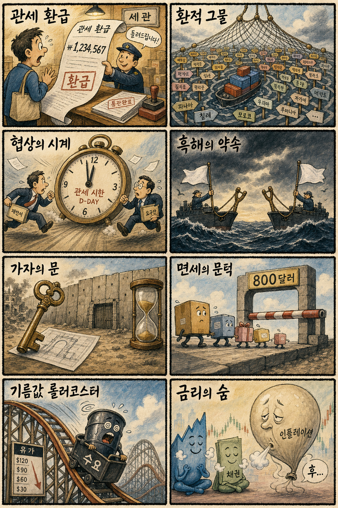
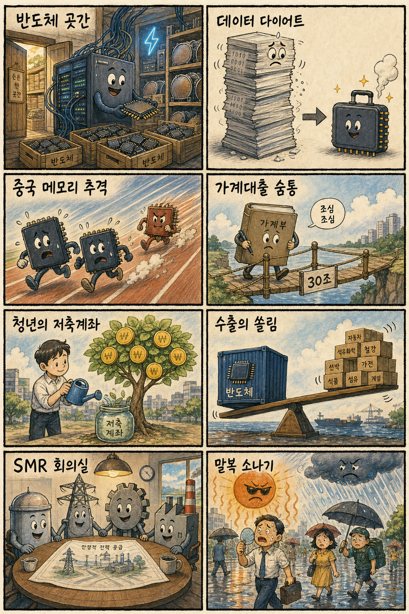

01
테슬라 · 327.33→339.96달러 · +3.86%
내용요약 PPI 부담 완화와 성장주 위험선호 속 정규장 시가 대비 강하게 올랐습니다.
예상여파 국내 이차전지·부품 심리에 우호적일 수 있으나 기업별 수주와 실적 확인 없는 동반 추격은 경계해야 합니다.
MORNING_BRIEFING_20260814
작성 시각: 2026-08-14 06:40 KST · 직전 미국 정규장과 2026-08-14 KST 당일 공개 기사 기준
직전 미국 정규장인 8월 13일에는 다우 +0.13%, S&P 500 +0.65%, 나스닥 +0.81%로 일제히 상승했습니다. 7월 생산자물가가 시장 우려를 덜고 국제유가가 하락하면서 금리 부담이 완화됐고 기술주가 상대강세를 보였습니다. 다만 한국 증시는 KOSPI가 이틀 연속 3%대 급등하고 반도체 대형주가 연속 상승한 뒤여서 미국발 훈풍보다 시초가 과열과 차익실현을 엄격히 봐야 합니다.
| 지수 | 종가 | 등락률 | 한국 증시 영향 |
|---|---|---|---|
| 다우존스 | 53,839.99 | +0.13% | 경기민감주 완만한 우호 |
| S&P 500 | 7,798.99 | +0.65% | 위험선호 개선 |
| 나스닥 종합 | 26,803.03 | +0.81% | 기술주 심리 우호 |
PPI 안도와 유가 하락으로 기술주가 상승했습니다.
반도체 대형주가 이틀 연속 지수를 끌어올렸습니다.
연속 급등 뒤 갭과 외국인 수급 지속성을 확인합니다.
확률·표본·손익비 문턱을 모두 통과한 후보가 없습니다.
8월 13일 보고서는 수급·컨센서스·보정 표본·손익비 문턱을 동시에 검증하지 못해 공식 추천을 내지 않았습니다. 실제 시가 기준으로 계산할 종목이 없으며 게시 당시 판단은 그대로 유지됩니다.
| 시장 | 종가 | 등락률 | 해석 |
|---|---|---|---|
| KOSPI | 6,813.34 | +3.56% | 반도체 주도 연속 급등 |
| KOSDAQ | 861.37 | +0.29% | 대형주 쏠림 속 제한 상승 |
| 다우존스 | 53,839.99 | +0.13% | 완만한 상승 |
| S&P 500 | 7,798.99 | +0.65% | 물가 부담 완화 |
| 나스닥 | 26,803.03 | +0.81% | 기술주 상대강세 |
삼성전자 +4.89%, SK하이닉스 +5.92%로 연속 상승했습니다.
테슬라·팔란티어·인텔이 시가 대비 3% 안팎 올랐습니다.
수요 둔화 전망으로 WTI가 하락해 에너지 심리는 약했습니다.
KOSPI 이틀 연속 급등 뒤 차익실현 위험이 커졌습니다.
내용요약 PPI 부담 완화와 성장주 위험선호 속 정규장 시가 대비 강하게 올랐습니다.
예상여파 국내 이차전지·부품 심리에 우호적일 수 있으나 기업별 수주와 실적 확인 없는 동반 추격은 경계해야 합니다.
내용요약 AI 소프트웨어 성장 기대를 반영해 시가 대비 3% 넘게 상승했습니다.
예상여파 국내 AI 소프트웨어 종목의 심리를 자극할 수 있지만 고평가와 테마 변동성을 함께 봐야 합니다.
내용요약 반도체 업종 위험선호 회복 속 시가 대비 3%가량 올랐습니다.
예상여파 반도체 전반 심리에는 우호적이지만 국내 메모리는 연속 급등 뒤 진입 손익비를 별도로 판단해야 합니다.
내용요약 전일 약세를 딛고 기술주 랠리에 동참하며 시가 대비 반등했습니다.
예상여파 빅테크 투자심리 개선은 국내 인터넷·AI 서비스주에 긍정적이나 종목별 실적 차별화는 계속될 수 있습니다.
내용요약 주요 기술주 상승장에서 시가 대비 하락해 상대약세를 보였습니다.
예상여파 미국 소비·클라우드 내 종목별 차별화가 남아 있어 국내 플랫폼주도 일괄 상승보다 실적 선별이 중요합니다.
나스닥 +0.81%와 미국 성장주 상승, 유가 하락은 국내 기술주와 운송·소비 원가에 우호적입니다. 그러나 국내에서는 8월 13일 KOSPI가 3.56%, 삼성전자가 4.89%, SK하이닉스가 5.92% 올라 이틀 연속 기대가 빠르게 가격에 반영됐습니다. KOSDAQ은 0.29% 상승에 그쳐 대형 반도체 쏠림도 이어졌습니다. 첫 30분 시초가 갭, 외국인 현·선물 수급, 삼성전자 268,000원과 SK하이닉스 1,593,000원 부근의 매물 소화를 확인하기 전에는 추격을 피하는 편이 합리적입니다.
오늘은 추천 없음 — 현금 관망
전일까지의 외국인·기관 수급, 컨센서스 변화, 30건 이상 유사 조건 확률 보정, 예상 손익비 1.5 이상을 동시에 검증해 종합점수 75점·상승확률 60% 문턱을 넘긴 후보가 없습니다. 이틀 연속 반도체 급등만으로 오늘 상승확률을 만들지 않으며 시가 갭을 확인하기 전에는 임의 추천하지 않습니다.
관심 연결종목 메모리 반도체, AI 데이터센터 전력, SMR 공급망은 관찰 대상일 뿐 매수 추천이 아닙니다. 시초가 갭 상승 시 추격매수 금지입니다.
이틀 연속 급등한 반도체 대형주의 추격 과열을 확인합니다.
수요 둔화 전망이 운송·화학 원가에 이어지는지 봅니다.
KOSPI 연속 급등을 뒷받침한 수급의 연속성을 점검합니다.
대형주 쏠림이 중소형주로 확산되는지가 중요합니다.
핵심 요약: AI 데이터센터가 반도체·전력·통신 수요를 함께 키우는 가운데 데이터 압축과 제조 AI 에이전트가 효율 경쟁의 중심으로 이동하고 있습니다. 중국 DDR5 수율 개선과 피지컬 AI 협력 확대는 국내 산업에 기회와 추격 압력을 동시에 줍니다.
내용요약 AI 데이터센터 투자가 반도체뿐 아니라 전력 설비와 통신 인프라까지 국내 산업의 수요 기반을 넓힌다는 분석입니다.
예상여파 설비투자가 본격화되면 반도체·전력기기·광통신 공급망에 기회가 생기지만 전력망과 인허가 병목을 함께 풀어야 합니다.
내용요약 김정호 교수 연구진 출신 창업팀이 반도체 설계·운영 데이터의 양을 크게 줄이는 기술을 개발했다는 보도입니다.
예상여파 데이터 이동량과 전력 소모를 낮추면 AI 반도체 효율 경쟁이 빨라지고 국내 설계 생태계의 기술 선택지도 넓어질 수 있습니다.
내용요약 중국 메모리 업체 CXMT의 DDR5 수율이 90%를 넘었다는 관측과 국내 메모리 기업에 미칠 영향을 다룬 기사입니다.
예상여파 중국의 범용 D램 추격은 가격 경쟁을 키울 수 있어 국내 기업은 HBM·첨단 공정과 원가 경쟁력으로 격차를 유지해야 합니다.
내용요약 LG그룹 회장이 엔비디아 최고경영자와 만나 로봇과 AI 공장 협력을 논의했다는 보도입니다.
예상여파 제조 현장의 피지컬 AI 투자가 확대되면 로봇·센서·산업 소프트웨어와 데이터센터 수요가 함께 커질 수 있습니다.
내용요약 제조사들이 사내 챗봇의 한계를 넘어 업무를 직접 수행하는 AI 에이전트 도입을 위해 외부 생태계와의 연계를 확대한다는 기사입니다.
예상여파 도입 속도가 빨라질수록 생산성 개선과 함께 권한관리·보안·책임소재를 통제하는 운영 체계가 중요해집니다.
핵심 요약: 흑해 민간 표적 공격 중단 제안은 물류 위험 완화 가능성을 열었지만 북미 관세 시한과 중국산 환적 단속이 공급망 긴장을 높이고 있습니다. 미국 소액면세 폐지와 유가 하락까지 무역·소비·물가의 방향이 동시에 바뀌는 국면입니다.
내용요약 우크라이나가 러시아에 흑해의 민간 선박과 항만 시설에 대한 공격을 서로 중단하자고 제안했다는 보도입니다.
예상여파 합의가 이뤄지면 곡물·에너지 해상 운송 위험과 보험료가 낮아질 수 있지만 이행 여부가 관건입니다.
내용요약 미국과 캐나다가 50% 관세 시한을 앞두고 협상에 진전을 보이며 타결 의지를 확인했다는 보도입니다.
예상여파 합의 여부는 북미 자동차·금속 공급망 비용과 한국 기업의 현지 생산·수출 전략에 직접 영향을 줄 수 있습니다.
내용요약 미국 백악관이 중국산 제품의 관세 회피 환적에 40개국이 연루됐다고 주장하며 한국도 거론했다는 보도입니다.
예상여파 원산지 검증과 통관 규제가 강화되면 국내 수출기업의 증빙·물류 비용이 늘고 대미 공급망 점검이 촘촘해질 수 있습니다.
내용요약 미국 법원이 800달러 이하 수입품에 적용되던 소액 면세 폐지를 합법으로 판단했다는 기사입니다.
예상여파 해외 직구와 저가 전자상거래의 가격 경쟁력이 낮아지고 통관 물량과 소비자 부담이 늘 수 있습니다.
내용요약 국제에너지기구의 석유 수요 감소 전망이 부각되며 서부텍사스산 원유가 2.4% 하락했다는 보도입니다.
예상여파 유가 하락은 운송·화학 원가와 물가에 우호적이지만 에너지 업종의 실적 기대는 낮출 수 있습니다.

핵심 요약: 반도체 호조가 지역 생산과 수출을 끌어올리는 가운데 가계대출 공급 확대와 청년 자산형성 정책이 내수의 체감 변수가 됐습니다. AI 시대 전력을 위한 SMR 협력, 말복 폭염과 소나기도 오늘의 산업·생활 리스크입니다.
내용요약 금융권 가계대출 총량 증가율을 높여 약 30조원의 공급 여력을 추가로 확보하는 방안이 추진된다는 보도입니다.
예상여파 대출절벽 완화에는 도움이 되지만 주택가격과 가계부채 재가속을 막는 차주별 건전성 관리가 필요합니다.
내용요약 청년내일저축계좌 가입자의 월소득이 3년 사이 50만원 이상 증가했다는 정부 발표입니다.
예상여파 자산형성 지원이 근로 지속과 소득 개선으로 이어지는지 확인하면서 사각지대와 중도이탈을 줄이는 설계가 중요합니다.
내용요약 반도체 호조에 힘입어 인천 지역 제조업 생산과 수출이 개선됐다는 지역경제 보도입니다.
예상여파 반도체 사이클의 지역 고용·투자 파급은 긍정적이지만 품목 집중에 따른 변동성 완화도 필요합니다.
내용요약 빌 게이츠가 방한해 국내 정·재계 인사들과 소형모듈원전 협력 방안을 논의할 예정이라는 보도입니다.
예상여파 AI 데이터센터 전력 수요와 맞물려 원전 공급망 기회가 커질 수 있으나 기술·경제성·안전성 검증이 선행돼야 합니다.
내용요약 말복인 오늘 전국 곳곳에 소나기와 돌풍·천둥번개가 예보됐고 낮 최고기온은 35도까지 오를 전망입니다.
예상여파 온열질환과 전력 피크, 국지성 호우에 따른 교통·물류 차질을 함께 대비해야 합니다.
